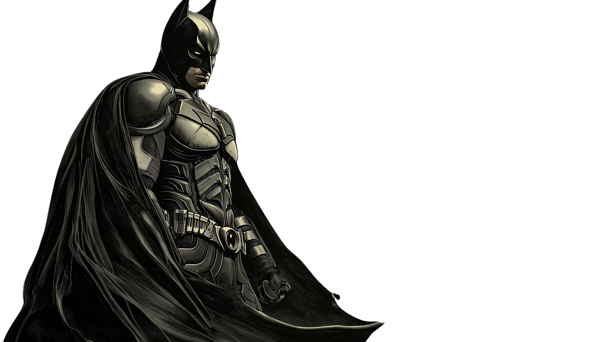

Two years of nights have turned Bruce Wayne into a nocturnal animal. But as he continues to find his way as Gotham's dark knight Bruce is forced into a game of cat and mouse with his biggest threat so far, a manic killer known as "The Riddler" who is filled with rage and determined to expose the corrupt system whilst picking off all of Gotham's key political figures. Working with both established and new allies, Bruce must track down the killer and see him brought to justice, while investigating his father's true legacy and questioning the effect that he has had on Gotham so far as "The Batman."—jc-15610
